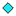

<!doctype html>
<html lang="en">
    <head>
        <meta charset="utf-8">
        <meta http-equiv="X-UA-Compatible" content="IE=edge">
        <meta name="viewport" content="initial-scale=1,user-scalable=no,maximum-scale=1,width=device-width">
        <meta name="mobile-web-app-capable" content="yes">
        <meta name="apple-mobile-web-app-capable" content="yes">
        <link rel="stylesheet" href="css/leaflet.css">
        <link rel="stylesheet" href="css/qgis2web.css"><link rel="stylesheet" href="css/fontawesome-all.min.css">
        <link rel="stylesheet" href="css/MarkerCluster.css">
        <link rel="stylesheet" href="css/MarkerCluster.Default.css">
        <style>
        #map {
            width: 1397px;
            height: 972px;
        }
        </style>
        <title></title>
    </head>
    <body>
        <div id="map">
        </div>
        <script src="js/qgis2web_expressions.js"></script>
        <script src="js/leaflet.js"></script>
        <script src="js/leaflet-svg-shape-markers.min.js"></script>
        <script src="js/leaflet.rotatedMarker.js"></script>
        <script src="js/leaflet.pattern.js"></script>
        <script src="js/leaflet-hash.js"></script>
        <script src="js/Autolinker.min.js"></script>
        <script src="js/rbush.min.js"></script>
        <script src="js/labelgun.min.js"></script>
        <script src="js/labels.js"></script>
        <script src="js/leaflet.markercluster.js"></script>
        <script src="data/Sink_plots_withinfo_novana_nearby_1.js"></script>
        <script src="data/Novana_plots_eng_within_5km_2.js"></script>
        <script>
        var map = L.map('map', {
            zoomControl:true, maxZoom:28, minZoom:1
        }).fitBounds([[54.45249590427535,7.026892117169792],[57.9154408849257,15.903439999702426]]);
        var hash = new L.Hash(map);
        map.attributionControl.setPrefix('<a href="https://github.com/tomchadwin/qgis2web" target="_blank">qgis2web</a> &middot; <a href="https://leafletjs.com" title="A JS library for interactive maps">Leaflet</a> &middot; <a href="https://qgis.org">QGIS</a>');
        var autolinker = new Autolinker({truncate: {length: 30, location: 'smart'}});
        var bounds_group = new L.featureGroup([]);
        function setBounds() {
        }
        map.createPane('pane_Google_0');
        map.getPane('pane_Google_0').style.zIndex = 400;
        var layer_Google_0 = L.tileLayer('http://www.google.cn/maps/vt?lyrs=s@189&gl=cn&x={x}&y={y}&z={z}', {
            pane: 'pane_Google_0',
            opacity: 1.0,
            attribution: '',
            minZoom: 1,
            maxZoom: 28,
            minNativeZoom: 0,
            maxNativeZoom: 19
        });
        layer_Google_0;
        map.addLayer(layer_Google_0);
        function pop_Sink_plots_withinfo_novana_nearby_1(feature, layer) {
            var popupContent = '<table>\
                    <tr>\
                        <td colspan="2"><strong>PunktID</strong><br />' + (feature.properties['PunktID'] !== null ? autolinker.link(feature.properties['PunktID'].toLocaleString()) : '') + '</td>\
                    </tr>\
                    <tr>\
                        <td colspan="2"><strong>Dato</strong><br />' + (feature.properties['Dato'] !== null ? autolinker.link(feature.properties['Dato'].toLocaleString()) : '') + '</td>\
                    </tr>\
                    <tr>\
                        <td colspan="2"><strong>X</strong><br />' + (feature.properties['X'] !== null ? autolinker.link(feature.properties['X'].toLocaleString()) : '') + '</td>\
                    </tr>\
                    <tr>\
                        <td colspan="2"><strong>Y</strong><br />' + (feature.properties['Y'] !== null ? autolinker.link(feature.properties['Y'].toLocaleString()) : '') + '</td>\
                    </tr>\
                    <tr>\
                        <td colspan="2"><strong>Pix_eng_05</strong><br />' + (feature.properties['Pix_eng_05'] !== null ? autolinker.link(feature.properties['Pix_eng_05'].toLocaleString()) : '') + '</td>\
                    </tr>\
                    <tr>\
                        <td colspan="2"><strong>Pix_eng_1k</strong><br />' + (feature.properties['Pix_eng_1k'] !== null ? autolinker.link(feature.properties['Pix_eng_1k'].toLocaleString()) : '') + '</td>\
                    </tr>\
                    <tr>\
                        <td colspan="2"><strong>Nof_nov_05</strong><br />' + (feature.properties['Nof_nov_05'] !== null ? autolinker.link(feature.properties['Nof_nov_05'].toLocaleString()) : '') + '</td>\
                    </tr>\
                    <tr>\
                        <td colspan="2"><strong>Nof_nov1km</strong><br />' + (feature.properties['Nof_nov1km'] !== null ? autolinker.link(feature.properties['Nof_nov1km'].toLocaleString()) : '') + '</td>\
                    </tr>\
                </table>';
            layer.bindPopup(popupContent, {maxHeight: 400});
        }

        function style_Sink_plots_withinfo_novana_nearby_1_0() {
            return {
                pane: 'pane_Sink_plots_withinfo_novana_nearby_1',
                radius: 7.200000000000003,
                opacity: 1,
                color: 'rgba(35,35,35,1.0)',
                dashArray: '',
                lineCap: 'butt',
                lineJoin: 'miter',
                weight: 1,
                fill: true,
                fillOpacity: 1,
                fillColor: 'rgba(234,63,234,1.0)',
                interactive: true,
            }
        }
        map.createPane('pane_Sink_plots_withinfo_novana_nearby_1');
        map.getPane('pane_Sink_plots_withinfo_novana_nearby_1').style.zIndex = 401;
        map.getPane('pane_Sink_plots_withinfo_novana_nearby_1').style['mix-blend-mode'] = 'normal';
        var layer_Sink_plots_withinfo_novana_nearby_1 = new L.geoJson(json_Sink_plots_withinfo_novana_nearby_1, {
            attribution: '',
            interactive: true,
            dataVar: 'json_Sink_plots_withinfo_novana_nearby_1',
            layerName: 'layer_Sink_plots_withinfo_novana_nearby_1',
            pane: 'pane_Sink_plots_withinfo_novana_nearby_1',
            onEachFeature: pop_Sink_plots_withinfo_novana_nearby_1,
            pointToLayer: function (feature, latlng) {
                var context = {
                    feature: feature,
                    variables: {}
                };
                return L.circleMarker(latlng, style_Sink_plots_withinfo_novana_nearby_1_0(feature));
            },
        });
        bounds_group.addLayer(layer_Sink_plots_withinfo_novana_nearby_1);
        map.addLayer(layer_Sink_plots_withinfo_novana_nearby_1);
        function pop_Novana_plots_eng_within_5km_2(feature, layer) {
            var popupContent = '<table>\
                    <tr>\
                        <td colspan="2"><strong>Plot5mID</strong><br />' + (feature.properties['Plot5mID'] !== null ? autolinker.link(feature.properties['Plot5mID'].toLocaleString()) : '') + '</td>\
                    </tr>\
                    <tr>\
                        <td colspan="2"><strong>Yeare</strong><br />' + (feature.properties['Yeare'] !== null ? autolinker.link(feature.properties['Yeare'].toLocaleString()) : '') + '</td>\
                    </tr>\
                    <tr>\
                        <td colspan="2"><strong>Habitat</strong><br />' + (feature.properties['Habitat'] !== null ? autolinker.link(feature.properties['Habitat'].toLocaleString()) : '') + '</td>\
                    </tr>\
                    <tr>\
                        <td colspan="2"><strong>HabitatID</strong><br />' + (feature.properties['HabitatID'] !== null ? autolinker.link(feature.properties['HabitatID'].toLocaleString()) : '') + '</td>\
                    </tr>\
                    <tr>\
                        <td colspan="2"><strong>UTM_X_orig</strong><br />' + (feature.properties['UTM_X_orig'] !== null ? autolinker.link(feature.properties['UTM_X_orig'].toLocaleString()) : '') + '</td>\
                    </tr>\
                    <tr>\
                        <td colspan="2"><strong>UTM_Y_orig</strong><br />' + (feature.properties['UTM_Y_orig'] !== null ? autolinker.link(feature.properties['UTM_Y_orig'].toLocaleString()) : '') + '</td>\
                    </tr>\
                    <tr>\
                        <td colspan="2"><strong>SpRichness</strong><br />' + (feature.properties['SpRichness'] !== null ? autolinker.link(feature.properties['SpRichness'].toLocaleString()) : '') + '</td>\
                    </tr>\
                </table>';
            layer.bindPopup(popupContent, {maxHeight: 400});
        }

        function style_Novana_plots_eng_within_5km_2_0() {
            return {
                pane: 'pane_Novana_plots_eng_within_5km_2',
                shape: 'diamond',
                radius: 5.600000000000001,
                opacity: 1,
                color: 'rgba(35,35,35,1.0)',
                dashArray: '',
                lineCap: 'butt',
                lineJoin: 'miter',
                weight: 1,
                fill: true,
                fillOpacity: 1,
                fillColor: 'rgba(27,232,239,1.0)',
                interactive: true,
            }
        }
        map.createPane('pane_Novana_plots_eng_within_5km_2');
        map.getPane('pane_Novana_plots_eng_within_5km_2').style.zIndex = 402;
        map.getPane('pane_Novana_plots_eng_within_5km_2').style['mix-blend-mode'] = 'normal';
        var layer_Novana_plots_eng_within_5km_2 = new L.geoJson(json_Novana_plots_eng_within_5km_2, {
            attribution: '',
            interactive: true,
            dataVar: 'json_Novana_plots_eng_within_5km_2',
            layerName: 'layer_Novana_plots_eng_within_5km_2',
            pane: 'pane_Novana_plots_eng_within_5km_2',
            onEachFeature: pop_Novana_plots_eng_within_5km_2,
            pointToLayer: function (feature, latlng) {
                var context = {
                    feature: feature,
                    variables: {}
                };
                return L.shapeMarker(latlng, style_Novana_plots_eng_within_5km_2_0(feature));
            },
        });
        var cluster_Novana_plots_eng_within_5km_2 = new L.MarkerClusterGroup({showCoverageOnHover: false,
            spiderfyDistanceMultiplier: 2});
        cluster_Novana_plots_eng_within_5km_2.addLayer(layer_Novana_plots_eng_within_5km_2);

        bounds_group.addLayer(layer_Novana_plots_eng_within_5km_2);
        cluster_Novana_plots_eng_within_5km_2.addTo(map);
        var baseMaps = {};
        L.control.layers(baseMaps,{' Novana_plots_eng_within_5km': cluster_Novana_plots_eng_within_5km_2,' Sink_plots_withinfo_novana_nearby': layer_Sink_plots_withinfo_novana_nearby_1,"Google": layer_Google_0,},{collapsed:false}).addTo(map);
        setBounds();
        </script>
    </body>
</html>
